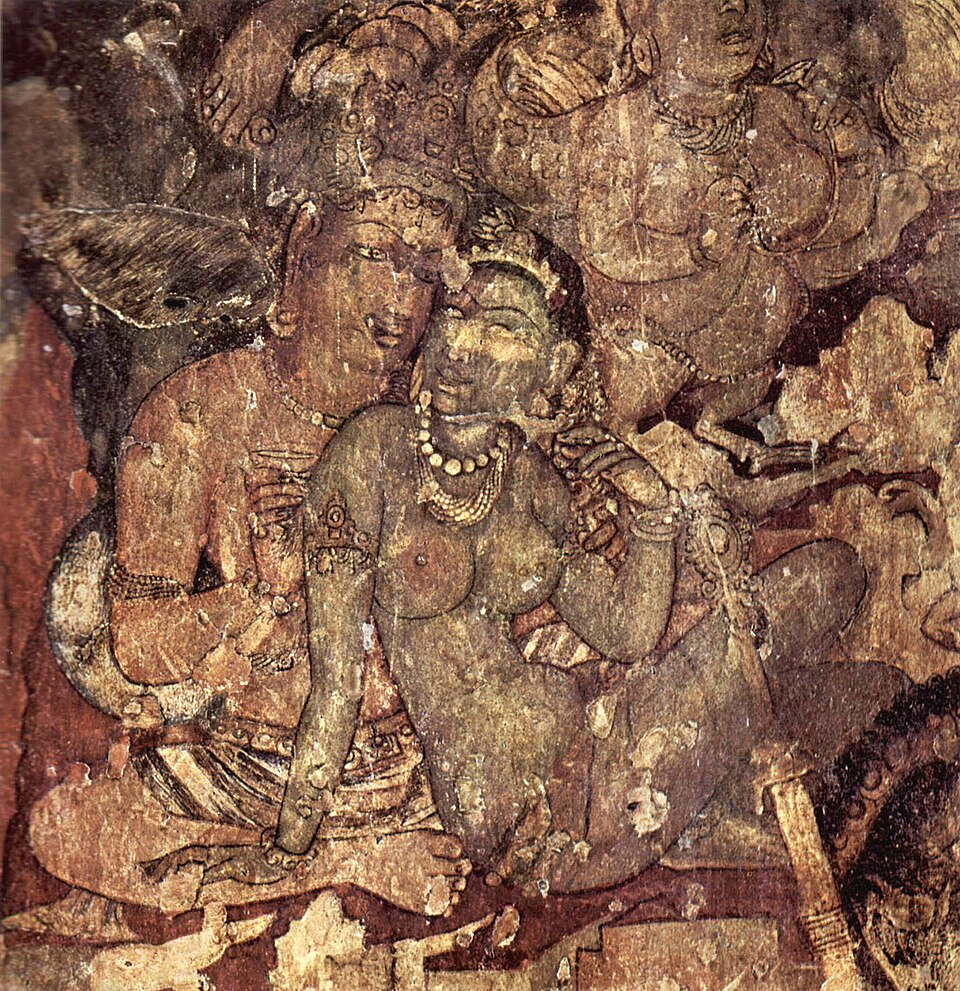
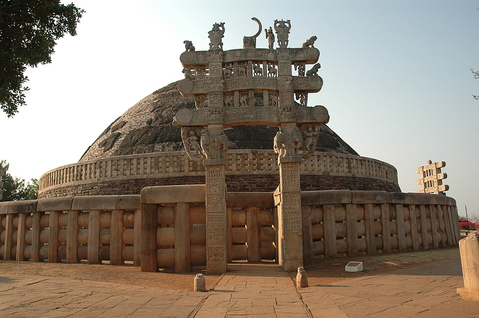

| School | Period | Region | Style | Key Features |
|---|---|---|---|---|
| Mauryan | 322-185 BCE | Pataliputra (Bihar), nationwide | Imperial | Polished stone pillars, animal capitals (Sarnath Lion Capital), Barabar Caves (Bihar, rock-cut) |
| Gandhara | 1st-3rd c. CE | Peshawar, Taxila (Pakistan/Afghanistan) | Greco-Roman | Wavy hair, muscular body, Greek drapery, sandals, blue-grey schist. First human Buddha images. |
| Mathura | 1st-3rd c. CE | Mathura (UP) | Indigenous Indian | Usnisa (topknot), serene expression, transparent robes, red sandstone. Buddhist + Jain + Hindu images. |
| Amaravati | 2nd c. BCE - 3rd c. CE | Lower Krishna valley (Andhra Pradesh) | Satavahana | White marble sculptures, Amaravati Stupa, limestone reliefs (Jataka tales). Now in British Museum + Chennai. |
| Feature | Nagara (North Indian) | Dravida (South Indian) |
|---|---|---|
| Tower | Curvilinear shikhara (tower over sanctum) | Vimana (pyramidal tower over sanctum) |
| Gateway | No prominent gopuram | Gopuram (towering gateway) |
| Enclosure | No enclosure wall (open) | Large enclosure walls |
| Water tank | No water tank | Temple tank (pushkarni) |
| Examples | Dashavatara (Deogarh, Gupta), Kandariya Mahadeo (Khajuraho), Lingaraj (Bhubaneswar), Sun Temple (Konark) | Brihadeshwara (Tanjore, Chola), Meenakshi (Madurai), Kailasanatha (Kanchipuram, Pallava) |
| Origin | Gupta period (4th-6th c. CE) | Pallava period (6th-8th c. CE) |
| Text | Author | Period | Subject |
|---|---|---|---|
| Arthashastra | Kautilya (Chanakya) | 4th c. BCE (Mauryan) | Statecraft, economics, military strategy |
| Ashtadhyayi | Panini | 5th-4th c. BCE | Sanskrit grammar (3,959 sutras) |
| Mahabhashya | Patanjali | 2nd c. BCE (Shunga) | Commentary on Ashtadhyayi |
| Shakuntala | Kalidasa | 4th-5th c. CE (Gupta) | Sanskrit drama |
| Aryabhatiya | Aryabhata | 499 CE (Gupta) | Mathematics, astronomy (pi, Earth rotation) |
| Charaka Samhita | Charaka | 1st-2nd c. CE | Internal medicine (Ayurveda) |
| Sushruta Samhita | Sushruta | 6th c. BCE | Surgery (120 instruments, rhinoplasty) |
| Silappadikaram | Ilango Adigal | 2nd c. CE (Sangam) | Tamil epic (Kovalan & Kannagi) |
| Thirukkural | Thiruvalluvar | 1st-2nd c. CE (Sangam) | 1,330 couplets (Aram, Porul, Inbam) |
Test your knowledge. Select the best answer for each question, then click "Check Answers" to see your score and explanations.